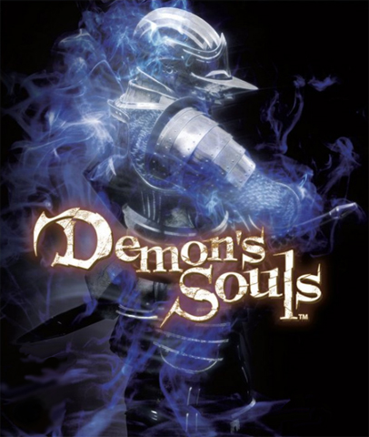

Playstation 3 ©
Uma virada na sétima geração
- Processador Cell Broadband Engine: Um processador poderoso e inovador desenvolvido em conjunto com IBM e Toshiba, que permitiu gráficos avançados e processamento simultâneo de várias tarefas
- Leitor de Blu-ray: O PS3 foi o primeiro console de jogos a incluir um leitor de Blu-ray, permitindo maior capacidade de armazenamento nos discos (até 50 GB), o que ajudou a melhorar a qualidade dos jogos e vídeos.
- Compatibilidade com alta definição: O PS3 suportava resoluções de até 1080p, oferecendo gráficos em alta definição, o que fez dele uma ótima plataforma para HDTVs.
- Conectividade online com PlayStation Network (PSN): O PS3 oferecia acesso gratuito ao serviço PSN, permitindo multiplayer online, compras digitais de jogos e mídia, além de downloads de demos e atualizações.
- Suporte a mídia digital e entretenimento: Além dos jogos, o PS3 oferecia suporte a uma vasta gama de formatos de mídia, incluindo reprodução de filmes em Blu-ray, DVDs, CDs de música e streaming de vídeos via Netflix, YouTube e outros serviços.
- Retrocompatibilidade (nas primeiras versões): As primeiras versões do PS3 ofereciam retrocompatibilidade com jogos do PlayStation 2, o que permitia aos jogadores continuar usando seus jogos antigos. No entanto, essa funcionalidade foi removida em versões posteriores.
- Controle sem fio DualShock 3/SIXAXIS: O controle sem fio do PS3 vinha com um sensor de movimento (SIXAXIS) e, posteriormente, vibração (DualShock 3), oferecendo uma experiência de jogo mais imersiva.


E conta com jogos exclusivos de peso
- 